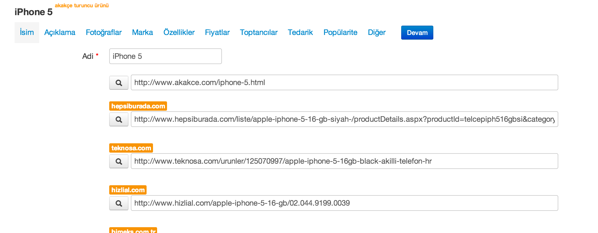

<div id="content">
    {%include top_page_header.html%}
    <div class="content-wrap">
        <div class="container clearfix">
            <div id="slider" class="thumb-slider">


                <div class="container clearfix">


                    <ul class="rs-slider">

                        <li>

                            

                            <div class="rs-caption slide-caption2">

                                <h3>Rakiplerinizi takip edin</h3>

                                <p>Tüm rakiplerinizi, hangi e-ticaret yazılımı kullanırlarsa kullansınlar takip edebilirsiniz.</p>

                            </div>

                        </li>

                        <li>

                            


                            <div class="rs-caption slide-caption-left">Mağazanıza entegre edin, piyasa fiyatlarıyla kendi fiyatlarınızı kolayca karşılaştırın.</div>

                        </li>

                        <li>

                            
                            <div class="rs-caption slide-caption2 slide-caption-right">

                                <p>Rakiplerinizin kullandığı ürün bilgilerini kolayca inceleyin.</p>

                            </div>

                        </li>

                        <li>

                            

                            <div class="rs-caption slide-caption2 slide-caption-left">

                                <h3>İnternetteki ürün fotoğraflarını otomatik çekin</h3>

                                <p>DDW sayesinde ürününüz için internette bulunan tüm fotoğraflarını tek bir sayfada listeleyip kendi sisteminize tek tıklamayla ekleyebilirsiniz.</p>

                            </div>


                        </li>

                        <li>

                            

                            <div class="rs-caption slide-caption2 slide-caption-left">Ürün fotoğraflarını başka bir program kullanmadan <br/>anında düzenleyip kendi sitenize ekleyin.</div>

                        </li>

                    </ul>


                    <script type="text/javascript">

                        $(document).ready(function() {

                            $('.rs-slider').refineSlide({
                                transition: 'random',
                                transitionDuration: 700,
                                autoPlay: true,
                                keyNav: false,
                                delay: 5000,
                                controls: 'thumbs'

                            });

                        });

                    </script>


                </div>


            </div>


        </div>
    </div>
</div>
